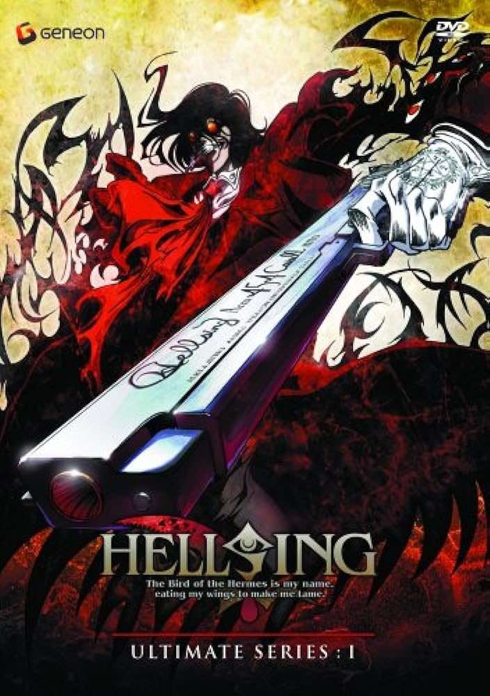
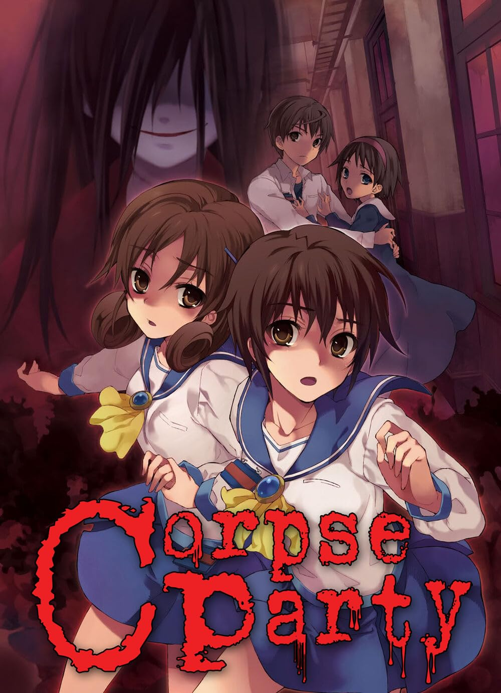
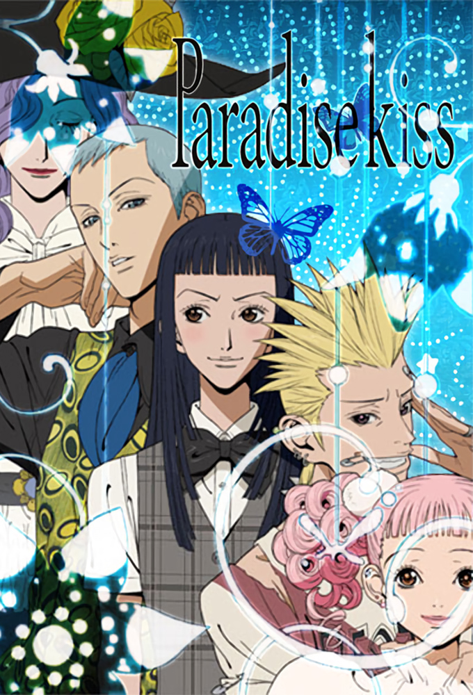

Generos de Anime
Aqui encontraras todo el tipo de generos existentes de el mundo de anime junto a unos animes recomendados:
Shonen:
Es un género que se enfoca más en un público masculino adolescente. Se caracteriza porque contiene historias con combates o historias violentas.
- Dragon Ball
- Naruto
- One Piece

Shojo:
Este en cambio se enfoca a un público femenino adolescente. La trama de estas producciones por lo general son protagonizadas por una joven, y sus tramas se centran en el drama y el romance y otros eventos que marcan el desarrollo de la protagonista.
- Sailor Moon
- Candy Candy
- Sakura Card Captor

Seinen:
El Seinen está enfocado en los hombres adultos, y se caracteriza por su contenido violento, gore y tambien por escenas sexuales. Contienen temas complejos que tal vez no despertarían interés en personas más jóvenes.
- Berserk
- Cowboy Bepop
- Hellsing

Gore:
El gore, por definición es un género de cine que se basa en el terror, pero en el terror visceral y la violencia grave externa. Lo que viene siendo sangre por litros, luchas sangrientas y fuertes y dolor en los personajes.
- Another
- Elfen lied
- Corpse Party

Josei:
Trata de un género que va dirigido a un público más adulto o maduro, pero femenino. Sus historias están cargadas de drama, romance, reencuentros de vida y tramas que se asimilan a las telenovelas.
- Nana
- Paradise Kiss
- Nodame Cantabile

Harem:
Se caracterizado por un hombre generalmente sin muchos talentos, rodeado por mujeres muy alocadas y distintas entre sí y comúnmente viviendo juntos.
- Watashi ga Motete Dousunda (Harem Inverso)
- Gotoubun no Hanayome
- Campione!

Hentai:
Se trata de un género del animé exclusivamente pensado para adultos, y que contiene desde lenguaje vulgar hasta desnudos y actos sexuales.
- Yubisaki kara Honki no Netsujou: Osananajimi wa Shouboushi
- Boku no Pico
- Euphoria